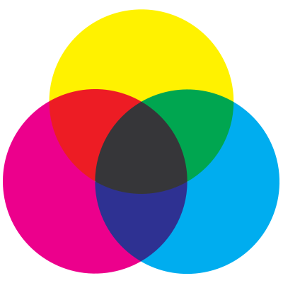

title: Subtractive Primary Colors description: The subtractive method of color mixing is based on the assumption that you start with white. ms.assetid: 6493497c-6de4-4f09-9e88-5948bd93c3b8 keywords:
The subtractive method of color mixing is based on the assumption that you start with white. All colors are present in equal amounts. If you subtract cyan and yellow from white, the resulting image is magenta. In a green image, subtracting cyan will result in changing the image to yellow.
The subtractive primary colors are cyan, yellow, and magenta. The following figure demonstrates subtractive primary color mixing.

Â
Â